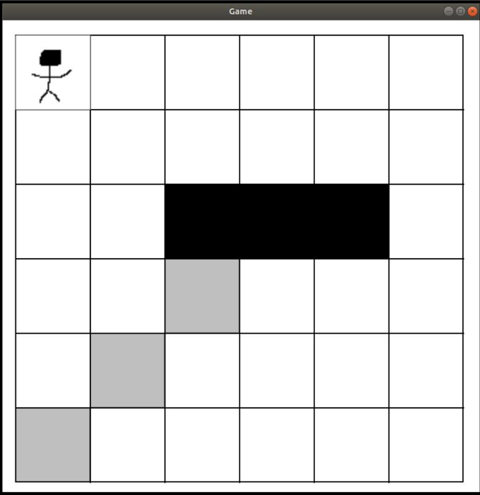

Puzzler: A Language for 2D Puzzle Game Creation
| #lang puzzler | package: puzzler |
Puzzler is a DSL designed to streamline the creation of 2D puzzle games. In general, Puzzler allows its users to express simple grid-based puzzle games in a succinct and declarative way.
1 An Example: Sokoban
A Puzzler program generates a racket/gui program based on various sections specified by its author. In this example, we will be looking at a game built with Puzzler called "Sokoban". Sokoban is a puzzle game in which the player must push boxes into specific locations on the map without blocking themselves or other boxes in and thus making the puzzle impossible to solve. It was originally released in 1982, but has spawned numerous derivatives and varieties.
A screenshot of this game running on Puzzler (with my excellent programmer art) is below:

Sokoban Game
And the source code for this game in Puzzler is as follows:
#lang puzzler START_MAP P##### ###### ##BBB# ###### ###### ###### END_MAP START_GOAL_MAP ###### ###### ###### ##B### #B#### B##### END_GOAL_MAP draw: "P" -> "player.png" "B" -> "rect" action: "P": "up" -> (0, 1) "P": "down" -> (0, -1) "P": "left" -> (-1, 0) "P": "right" -> (1, 0) interactions: "P" push "B" "B" stop "B"
As you can see, Puzzler is more of a description language than a standard procedural-style programming language like you might be used to. Nevertheless, it allows for quite a bit of expressiveness in a small package.
In the rest of this guide we will break down what makes this Sokoban example work, and how the various sections interact to generate a meaningful program.
1.1 The Map Section
All Puzzler programs begin with a map section. Our map section in Sokoban looks like this
START_MAP |
P##### |
###### |
##BBB# |
###### |
###### |
###### |
END_MAP |
The map section starts with a line START_MAP, which denotes the beginning of the map section. Each newline following this is considered a new row in the grid. In this example you can see the first row is "P#####". The character "#" represents an empty space in a Puzzler map, while all other character are special entities in the game.
The "P" in this map represents the player, and similarly the "B"s represent the boxes. It is easy to track which characters map to which entities by looking in the game’s draw section, which we will cover in a bit.
The map section is closed with a line END_MAP, denoting that we are done describing the game’s map.
1.2 The Goal Map Section
Many games—
START_GOAL_MAP |
###### |
###### |
###### |
##B### |
#B#### |
B##### |
END_GOAL_MAP |
The concept of a goal map is pretty simple. It essentially just says "if the map ever looks like this, then the game can be considered won". Different games may have different ways for the map to change, but the principle of winning via a goal map section stays the same. For our purposes in building Sokoban, this is the same thing as saying "The player has pushed all the boxes into their designated locations".
1.3 The Draw Section
The purpose of the draw section is to map the game entities on a Puzzler map to their image files. This also serves as a list of all the important entities within the game. The draw section consists of one or more draw rules, which associate an entity to an image file. In our Sokoban example, the draw section looks like this:
draw: |
"P" -> "player.png" |
"B" -> "rect" |
The first rule tells the Puzzler rendering system to draw the image "player.png" for every occurence of a "P" on the map. This is similar for the second rule, except that "rect" is a reserved symbol within the context of a Puzzler draw rule. The rendering system will draw a black rectangle for every "rect" occurence in Puzzler. In Sokoban, all of the boxes("B") that the player pushes are represented in this way.
1.4 The Action Section
So far we’ve only seen descriptions of the static elements of our Sokoban program, but it wouldn’t be a game without some way to interact with the program’s state. This is where the action section comes in. The action section describes how the player interacts with the elements in the game through input. Similar to the draw section, the action section is broken down into action rules, which describe how a given input changes the game’s state. The action section in the Sokoban example is as follows:
action: |
"P": "up" -> (0, 1) |
"P": "down" -> (0, -1) |
"P": "left" -> (-1, 0) |
"P": "right" -> (1, 0) |
The first rule in this example states that whenever the "up" key is pressed on the keyboard, any "P" entity (in this case the player) will have its position changed by 0 in the X direction and 1 in the Y direction. The rest of the action rules are very similar, changing only the key and the DX/DY values. In this game there is only one "P", but if there were multiple then these actions would be applied to all of the matched entities.
1.5 The Interaction Section
With the action section we have seen how to let players interact with the game world, but how do entities interact with each other? These kinds of interactions are expressed via the interaction section. Sticking with Puzzler tradition, this section consists of one or more interaction rules. The interactions in Sokoban are expressed like this:
interactions: |
"P" push "B" |
"B" stop "B" |
The way to read each of these rules is "When Entity1 collides with Entity2, X Interaction happens". So in the first rule, we have ’"P" push "B"’, which means that the entity "P" will "push" the entity
"B" upon collision. The "push" interaction is something built in to Puzzler which means that the entity being acted upon—
1.6 Wrapping Up: A Finished Game
As you can see, we now have all the pieces to create a working version of the game Sokoban. We can describe maps, goal maps for where to push boxes, player input and movement, sprite rendering, and interactions between game entities. This has all been done in roughly 30 lines of Puzzler code. More importantly, we can scale this example to produce more levels, entity types, and interactions by simply adding a few more rules. This is the purpose of the Puzzler language, and hopefully you’ve seen that it’s easy to express an interesting game without having to worry about too many complex and interacting systems.
If you are looking for more information about the specifics of Puzzler, please check out the documentation for each of the different sections. If you’d like to see more examples of games that can be built with Puzzler, clone or view the source code for Puzzler on GitHub and look in the examples directory.
Thanks for reading and have fun building puzzle games!
2 Maps
Every game built with Puzzler will start with a map section. This defines the "game world" so to speak, which is represented by a grid of characters.
2.1 Basic Map Rules
Puzzler maps are made up of blank spaces and entities in the following form:
START_MAP |
<map_row> |
... |
END_MAP |
Where <map_row> is a visual representation of a row on the grid, such as "###" or "#P#". Each <map_row> is separated by a new line. In Puzzler, a "#" character on the map means empty space, and any other character represents an entity in the game. For example:
START_MAP |
##### |
##P## |
##### |
END_MAP |
The above map is a 5x3 grid with some entity "P" (by convention we make the player "P", but it could be anything) in the center of 2nd row. This example illustrates an important example about Puzzler maps in that they do not have to be square. We could have a 5x3, 5x5, 3x5, or even a 1x1 (although that wouldn’t be very interesting). It is important, however, to note that all rows must be the same length. We cannot do something like the following:
START_MAP |
##P## |
#### |
### |
END_MAP |
This would fail to build in Puzzler, as we are currently limited to making all Puzzler maps rectangular.
2.2 Multiple Maps
You can build games in Puzzler which have multiple levels, and the syntax is pretty simple, for example:
START_MAP |
P#### |
##### |
##### |
|
##### |
##P## |
##### |
|
##### |
##### |
####P |
END_MAP |
The above map section generates a Puzzler game with 3 levels which progress in the order that they are defined. While map_rows are separated by newlines, maps are separated by a blank line. Puzzler will continue to look for maps until it sees the END_MAP token. Games with multiple map definitions have the same rules as games with only one map, however, it is important to know that all maps must be the same size.
3 Drawing and Images
Every game you build with Puzzler will have some images which represent entities in the game. In our Sokoban game, for example, we had an image for the player as well as an image for the boxes the player pushes around. Managing which images map to which game entities is the responsibility of our game’s draw section.
3.1 Draw Rules
The Puzzler draw section looks like this:
draw: |
<draw_rule> |
... |
Where <draw_rule> is of the form "<entity_character>" -> "<image_path>". Remember that in Puzzler every game entity is represented on the map as a single character like "P" or "X". So, for example, if we wanted to draw some image "player.png" for our game entity "P", we would do the following:
draw: |
"P" -> "player.png" |
This can be read as something like "P draws player.png". It is important to remember that image paths are defined in relation to where the Puzzler game is executing.
3.2 Built-Ins
There is one special case of draw rules in Puzzler: the reserved word "rect". Any entity which maps to "rect" in a draw rule will be drawn as a black box the same size as a single grid square. In the Sokoban example we had:
draw: |
"P" -> "player.png" |
"B" -> "rect" |
The first draw rule works normally and reads the image "player.png" from the current directory, but the second draw rule uses the built in shape "rect" to draw black boxes for all of the well, boxes, in the game.
4 Actions
The Puzzler language supports basic keyboard input via the action section. Currently the only supported type of input is moving entities around the game grid.
4.1 Action Rules
The action section starts off similar to the draw section, with the only difference being how you define action rules:
action: |
<action_rule> |
... |
Action rules consist of 3 parts: an entity, the key that invokes the action, and a coordinate pair representing the change in position of the specified entity. This is easiest to visualize with an example, so here’s one from our Sokoban game:
action: |
"P": "up" -> (0, 1) |
... |
We can break this rule down piece by piece, first noting that we are applying this action to the "P" entity (in our example this is the player). The next piece of information is the key to press to trigger the action, which we specify with the word "up" (key names are the ones returned from get-key-code in racket/gui/base). The final part of our rule is a coordinate pair representing the change in x and change in y (dx,dy) that we want our "P" entity to move by when we press "up". For this we have (0, 1), which means move 0 in the x-direction and positive 1 in the y-direction, and in our case this works well because we want our "P" to move up by 1 grid square. The rest of the action section should make sense now, as the remaining rules are just variations on the same formula:
action: |
"P": "up" -> (0, 1) |
"P": "down" -> (0, -1) |
"P": "left" -> (-1, 0) |
"P": "right" -> (1, 0) |
All of the actions are defined for the "P" entity, and all we have to change is the key and coordinate pair to have movement in four directions.
5 Interactions and Events
A game world without any interactivity would be very boring, and that’s where Puzzler’s interaction section comes in. The interaction section is where the interactions between entities are defined. In Puzzler, an interaction is what happens when one entity tries to move into the space that is occupied by another entity.
5.1 Interaction Rules
Defining interaction rules in Puzzler is similar to defining other types of rules, we start off with some symbol denoting the start of the interaction section and then list each rule on its own line:
interactions: |
<interaction_rule> |
... |
These interaction rules consist of three parts: the acting entity (the one moving and thus triggering the interaction), the interaction verb, and the entity being acted upon. The entities are represented by a single character, as usual, such as "P" or "B". The interaction verb can be one of three words: push, stop, or grab. These are the three types of interactions in Puzzler and they are shown in the example below:
interactions: |
"P" push "B" |
"B" stop "B" |
"P" grab "T" |
The first rule in this example says that whenever a "P" entity moves into a space where a "B" is occupying, the "P" will push the "B" in whatever direction "P" is moving in. It is important to note that entities cannot be pushed outside the bounds of the map.
The second rule might seem a little confusing, but imagine for a second that in our game "B" means "box" and there are multiple boxes on the map. If our "P" can go pushing boxes around all day long, we might want it so that if a "P" tries to push two boxes at a time (that is, push one box into a space occupied by another), the second box will stop the first. That is all this rule is stating: boxes cannot push other boxes. Interestingly enough, we could change this rule to "B" push "B", and our "P" entity would be able to push multiple boxes at a time.
The final rule, "grab", could just as accurately be called "replace". When "P" moves into the space occupied by "T", it will "grab" it and thus remove it from the game’s map. This can be useful if you want a game where your player has to navigate some puzzle and upon solving it they "grab" an entity to win the game.
5.1.1 Conflicting Interactions
After having seen a few interactions, you may thing "push is the opposite of stop, so what happens if I define them both?" While this is an interesting question, the answer is pretty boring: Puzzler takes the first interaction and will ignore the rest. For example:
interactions: |
"P" push "B" |
"P" stop "B" |
In this particular interaction section, the second rule will never actually be triggered because when a "P" moves into a space with a "B", Puzzler will see that there is a "push" interaction defined and it will trigger that.
5.2 Events (Well, just Event Really)
Puzzler has a somewhat obscure and situational feature called the event section. This is defined much the same as all of the other sections, and it only has one supported "type" at the moment. It is best to explain events with an example:
events: |
"P" onexit "B" |
This event, called onexit, looks a lot like an interaction. The difference is that this event triggers every time the first entity moves (thus the name, "onexit"). When the "P" entity exits a space on the map, that space will be filled with the second entity ("B"). onexit is definitely situational, and I would encourage you to check out trail-example.rkt on the Puzzler GitHub for a better idea of how it might be used.
6 Winning and Losing
All games in Puzzler need some way to represent winning and losing, and these conditions are defined in the win section and lose section, respectively. In this section, we’ll talk about the different kinds of win/lose conditions supported by the Puzzler language.
6.1 Defining Win Conditions
The win section follows the pattern of all the other Puzzler sections:
win: |
<win_rule> |
... |
Puzzler supports two types of win rules: count_items and straight_path_to. The count_items takes a type of entity and a number and it is triggered when the number of that particular entities on the map is equal to the supplied number. straight_path_to takes two entities and is triggered when there is either a horizontal or vertical clear path (unblocked by another entity) between the two entity types. For example:
win: |
"T" count_items 0 |
"P" straight_path_to "E" |
The first rule in this example counts the number of "T" entities on the map and changes the win state of the game to true if the count is zero. The second rule will trigger the win state if there is any clear horizontal or vertical path between any "P" and "E" entities.
6.1.1 Goal Maps
There is another type of win condition in Puzzler, called a goal map, which is defined in a different section from the other win rules. Goal maps are defined similarly to regular maps. Consider the following example:
START_GOAL_MAP |
###### |
P##### |
###### |
END_GOAL_MAP |
If a goal map is defined in Puzzler, the game will compare the current map to the goal map every time the game state updates. If the current map ever matches the goal map, the game win state will be set to true. In this example, we have essentially defined a new win condition stating that the "P" entity must be in the 2nd row and 1st column of the game’s map. It is important to know that since Puzzler supports multiple maps, the number of goal maps must equal the number of maps.
6.2 Defining Lose Conditions
Lose conditions are extremely similar to win conditions, except that they are defined in a lose section. The lose section looks like this:
lose: |
<lose_rule> |
... |
lose_rules support the same types as win_rules, which were described earlier. There is, however, currently no way to use a goal map to trigger a lose state in a Puzzler game.
7 Conclusion and Future Work
Hopefully by now you’ve seen what Puzzler is capable of. I would encourage you to go check out the examples on the Puzzler github page to see how these different pieces can be put together to build interesting games. I would also encourage you to take a look at Steven Lavelle’s PuzzleScript language, which inspired the design of Puzzler significantly. It is a good tool for web-based puzzle games rather than the desktop ones you can create with Puzzler.
While it’s true that Puzzler is already expressive enough to represent a variety of puzzle games, there is plenty of future work to improve both its expressiveness and robustness. The Puzzler system is very limited in its number of interactions and win/lose conditions, and a larger set would increase the expressiveness of the language. Another interesting project would be to implement a custom interaction system which would allow the user to define things like push and stop themselves.
If you are interested in using Puzzler for something it can’t currently express, feel free to submit a pull request, issue, or even fork the project and develop against it yourself. I am not "actively" working on new features for Puzzler, but I would be happy to engage with anyone interested in Puzzler or game development with Racket in general!